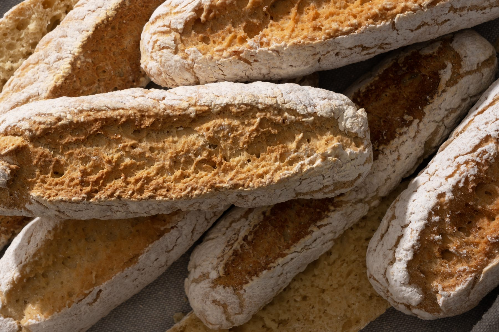
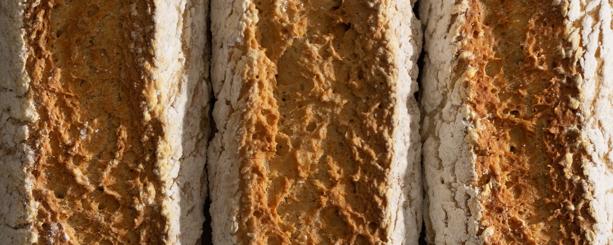

-

-

-

-

-


Real bread.No gluten.
Made with the best ingredients, naturally gluten free.
Our mantra
- delicious
- healthy
- gluten free
True Food is a way of living: eating well and feeling good, without giving anything up. It starts with our first rule — if it’s not delicious, it’s not True Food.

Real food, delicious and gluten free
At True Food we firmly believe you can live a gluten-free life without giving up the experience of eating. We make sure to offer healthy, delicious products that let you enjoy yourself and feel good doing it. We make sure every bite is a real delight, made with quality ingredients that are naturally gluten free.